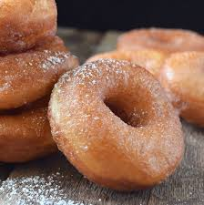

Receta de Malteada

Una dona es un tipo de pan que en lugar de hornearse se fríe en aceite
Ingredientes
- Harina de trigo
- Aceite
- Toppings a gusto
- Glaseado
Pasos a seguir
- Primero hacemos la masa, juntando harina con el agua y dejando que
repose hasta que duplique su tamaño
- Creamos una rueda con la masa y la introducimos al aceite
- Cuando termine de freírse (Se tarda unos 5 minutos) lo retiramos
- Estando tibio lo embarramos de glaseado
- Añadimos los toppings a placer
- Ya está lista, provecho
Inicio